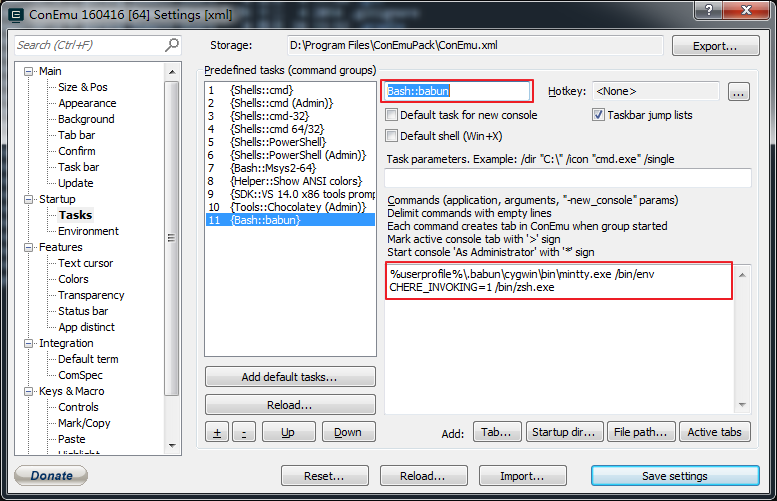
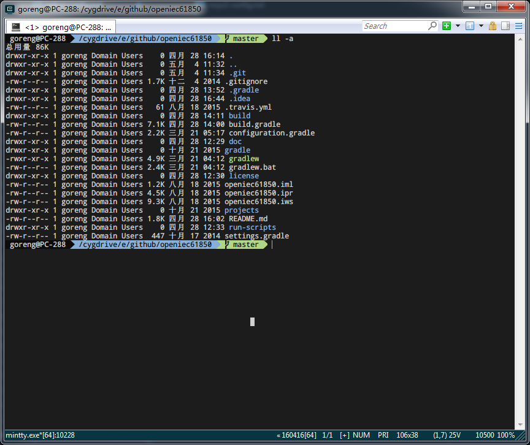

介绍
babun 号称是开箱即用的，本质是上就是 cygwin 加上了一些预设的配置。特性如下:
- Pre-configured Cygwin with a lot of addons
- Silent command-line installer, no admin rights required
- pact - advanced package manager (like apt-get or yum)
- xTerm-256 compatible console
- HTTP(s) proxying support
- Plugin-oriented architecture
- Pre-configured git and shell
- Integrated oh-my-zsh
- Auto update feature
- "Open Babun Here" context menu entry
安装
下载安装包解压缩到任意目录后，运行 install.bat。也可以使用 /t %target_folder% 指定安装目录。
配置
既然是开箱即用，对大多数人来说当然不需要太多配置，一般需要以下两个命令：
babun check用于判断环境是否正确babun update用于判断是否有新的更新包
包管理
babun 自带了叫做 pact 的包管理，修改自 apt-cyg, 但比较弱，用法如下：
1
2
3
4
5
6
7
8
9
10
11
12
13
14
15
16
17
18{ ~ } » pact --help
pact: Installs and removes Cygwin packages.
Usage:
"pact install <package names>" to install given packages
"pact remove <package names>" to remove given packages
"pact update <package names>" to update given packages
"pact show" to show installed packages
"pact find <patterns>" to find packages matching patterns
"pact describe <patterns>" to describe packages matching patterns
"pact packageof <commands or files>" to locate parent packages
"pact invalidate" to invalidate pact caches (setup.ini, etc.)
Options:
--mirror, -m <url> : set mirror
--invalidate, -i : invalidates pact caches (setup.ini, etc.)
--force, -f : force the execution
--help
--version
和 Windows 共享配置
- 添加环境变量
HOME，值为 Windows 的用户目录C:\Users\%USERNAME% - 启动 babun，执行
babun install，重启 babun
%USERNAME% 不能包含空格。如果用户名已经有空格，参考这里解决。
代理设置
只需要取消 .babunrc 中的注释 (%USERPROFILE%\.babunrc)
1
2
3
4
5# Uncomment this lines to set up your proxy
export http_proxy=user:password@server:port
export https_proxy=$http_proxy
export ftp_proxy=$http_proxy
export no_proxy=localhost
镜像
修改 ~/.pact/pact.repo 中的 PACT_REPO 字段
1
2
3
4
5
6
7
8
9
10
11
12
13
14
15
16
PACT_REPO=http://mirrors.neusoft.edu.cn/cygwin/
常用开发环境配置
Python
babun 自带的 Python2 并没有安装 pip，需要手动安装
1
2
3pact install python-setuptools python-ming
pact install libxml2-devel libxslt-devel libyaml-devel
curl -skS https://bootstrap.pypa.io/get-pip.py | python
Ruby
执行 pact install ruby
如果
ruby -v不能返回版本，执行update.bat更新 cygwin 的版本。via Issue #483
FAQ
-
compdef: unknown command or service: git
1
2$ compinit
$ cp .zcompdump .zcompdump-$HOSTNAME-$ZSH_VERSION -
删除右键中的
Open Babun here
执行babun shell-here remove -
与 ConEmu 集成
%userprofile%\.babun\cygwin\bin\mintty.exe /bin/env CHERE_INVOKING=1 /bin/zsh.exe -
X64
官方对于 64 位的解释。懒人也可以直接使用这个 PR 编译的分发包。有兴趣的也可以通过我合并的 x64 分支 自行构建。
总结
总的来说，babun 比 MSYS2 慢，包也不多，稳定性/兼容性貌似好一点。
最终配置效果：

---EOF---